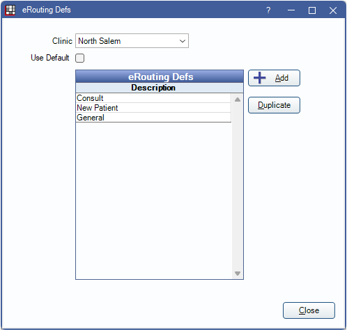
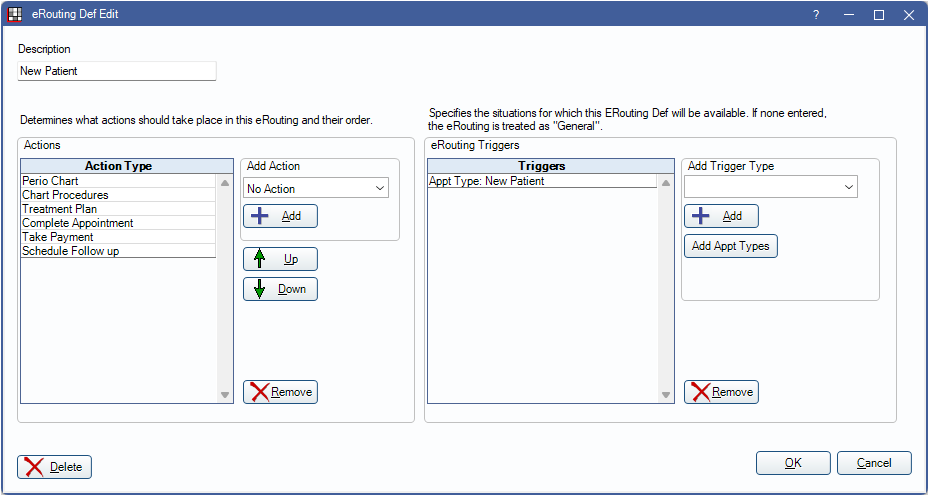

eRouting Setup
Set up customized eRouting definitions to meet the flow of different types of appointments.
In eRouting, click Setup.
- Clinic: Select the clinic assigned to the definition.
- Use Default: Check to use the default definitions instead of clinic specific definitions. Set default definitions by setting the clinic to HQ Default.
- Add: Click to add a new eRouting definition.
- Duplicate: Select an existing definition, then click to create a copy.
Click Add, or double-click an existing definition to edit.
Description: Enter a name for the eRouting definition.
Actions: Add actions to take for this eRouting definitions. Each action opens the appropriate screen in ODTouch.
Use the Add Action dropdown to select an action, then click Add to include it. Add each action individually. Use the Up and Down arrows to reorder actions. Options include:
- No Action: Do nothing on ODTouch.
- Perio Chart: Open ODTouch: Perio.
- Treatment Plan: Open ODTouch: Treatment Plans.
- Payment Plans: Open ODTouch: Payment Plans.
- Chart Procedures: Open ODTouch: Chart.
- Imaging: Open ODTouch: Images.
- Complete Appointment: Complete the appointment.
- Take Payment:
- Schedule Followup: Open ODTouch: Appointments.
To remove an Action Type, highlight it, then click Remove.
eRouting Triggers: Add trigger types to determine when a definition should be used. When patients meet the trigger criteria, the appropriate eRouting definition is begun in ODTouch. If multiple triggers are met, the user can select the definition to use.
Use the Add Trigger Type dropdown to select a trigger for patients to meet, then click Add to include it. Each trigger type is added individually. Options include:
- General: Used for patients that do not meet other trigger criteria.
- Add: Add a General trigger.
- Appointment: Use appointments as a trigger for patient criteria.
- Add: Add appointments as a trigger without a specific appointment type.
- Add Appt Types: Add a specific appointment type as a trigger.
- Billing Type: Use Billing Type as a trigger for patient criteria.
- Add: Add a specific Billing Type as a trigger.
To remove a Trigger, highlight it, then click Remove.
Click OK to save changes. Click Delete to remove the entire eRouting definition.